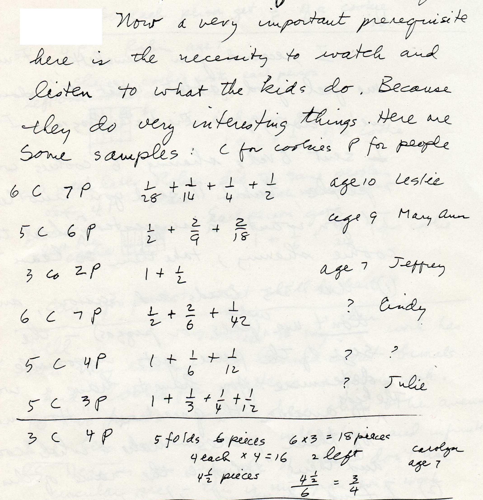
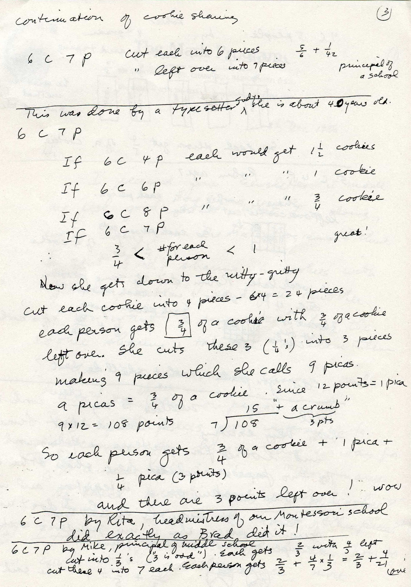
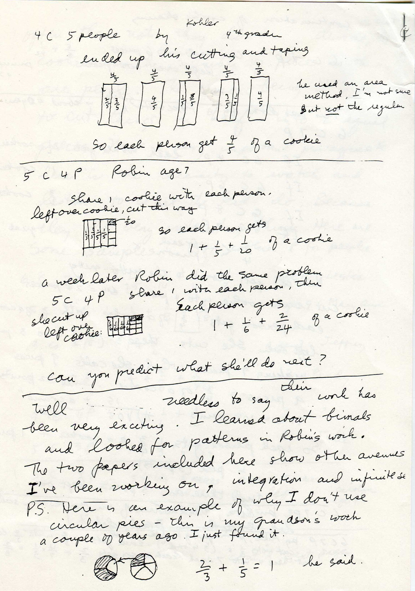

To share 2 cookies
between 5 people. John, a 4th grader, did this:
First he asked if he could have a ruler. I said why not do the best you can,
don't worry about making perfect cuts. He thought about his cutting a while.
Then he cut each cookie into 3 pieces, but not all equal pieces. He cut 2 pieces
the same size and one piece 1/2 the size of the other two! I
asked him what the size of the larger piece was and he immediately said 1/(2
1/2), one- two and a halfth!
He shared one of each of these larger pieces with each person, with 2 of the smaller pieces left over. "What is the name of the smaller piece?" I asked. He thought about this and saw that these two smaller pieces was as large as one of the bigger pieces and 5 would make a whole cookie, so each was 1/5 of a cookie. So each person got 1/(2 1/2) or 2/5 of a cookie! In all the years I've been doing the cookie-sharing, no one did what John did; that was exciting!
Fine job, John!!
Jean, age
5, on the cover of
Don's worksheet book, was among quite a few people who used Brad's method.
Another
interesting approach to cookie-sharing
Don
worked with Thomas, age 8, from Idaho, via IM. Don gave him the problem to share
5 cookies
between 7 people.
He
wasn't sure what to do, but he ended up with each person getting 1/2
+ 2/10 + 1/70 of
a cookie! Here
is what he did: He first cut each cookie into 2 pieces (each is 1/2 of a
cookie). He had 10 halves,
which he could share between 7 people.
At this
point, each person had 1/2 of
a cookie and there were 3- ''s
left over.
Thomas then
cut each 1/2 into 5 pieces.
Now what was the name of these small pieces? How many of these small pieces make
a whole cookie? Well, 5 pieces make a half of a cookie, so he said 10 make a
whole cookie. Each small piece was 1/10 of a cookie. Since there were 3 halves,
he now had 3x 5/10=15/10. Of the 15 tenths, each person could get 2/10, using up
14/10, with 1/10 left over.
At this
point, each person had 1/2
+ 2/10 of
a cookie, with 1/10 of a cookie left over. Thomas then cut the 1/10 into 7
pieces! He figured out that there were 70 of each of these smallest pieces and
each piece was 1/70 of a cookie! And each person got 1/70.
At this
point each person had 1/2
+ 2/10 +
1/70 of
a cookie, with no leftover pieces! So the answer to the question, "If you
share 5 cookies between 7 people, how many cookies would each person get?"
is 1/2
+ 2/10 +
1/70 of
a cookie!
Don
suggested we put these 7 groups together to see if we end up with the 5 cookies
that we started with. Thomas added these:
1.) 1/2
+ 2/10 + 1/70
2.) 1/2
+ 2/10 + 1/70
3.) 1/2
+ 2/10 + 1/70
4.) 1/2
+ 2/10 + 1/70
5.) 1/2
+ 2/10 + 1/70
6.) 1/2
+ 2/10 + 1/70
7.) 1/2
+ 2/10 + 1/70
He added
the 7 halves to get 3 1/2 + (7x 2/10 = 14/10) + (7x 1/70 = 7/70). The 7/70 he
said was 1/10. So altogether there were 3 1/2 + 14/10 + 1/10= 3 1/2 + 15/10 = 3
1/2 + 1 1/2 = 5!
Great
job,
Thomas!!!
This just shows that if the teacher listens to the student, some very interesting things can happen! Don thinks this is one of the keys that makes teaching so enjoyable. You can see his other work at http://www.mathman.biz/html/thomash.html .
The folowing pages are from a letter Don wrote to someone who should know better..that is, DO NOT USE CIRCULAR COOKIES TO DO COOKIE-SHARING!!!! I would never have thought of these!



On this day, 12 May 2010, I asked Tyler to share 4 cookies between 3 people (himself, his brother and I) and how many cookies would we each get? He said each person would get 1 remainder 1. I asked him again, since he had to use all the cookies, how many would we each get? Where are my cookies, I asked? Then he went and got the scissors. He cut the cookies, not equally and he said each person gets 1 and 3 halves.
If you cut the leftover cookie into 3 equal pieces, we would each get 1and one third or 1 1/3. If you cut a cookie into 5 pieces what would each piece be? He was then able to say 1 fifth; finally he got it! So I never talk about remainders (unless I was talking about modular arithmetic), but I say leftover pieces. This way very young people can understand fractions much more easily. And the young ones can even get to infinite series as Brad did!